The workspace
One surface for the whole company's memory.
Graph, chat, boards, people, ideas — everything the Brain knows, one sidebar away.
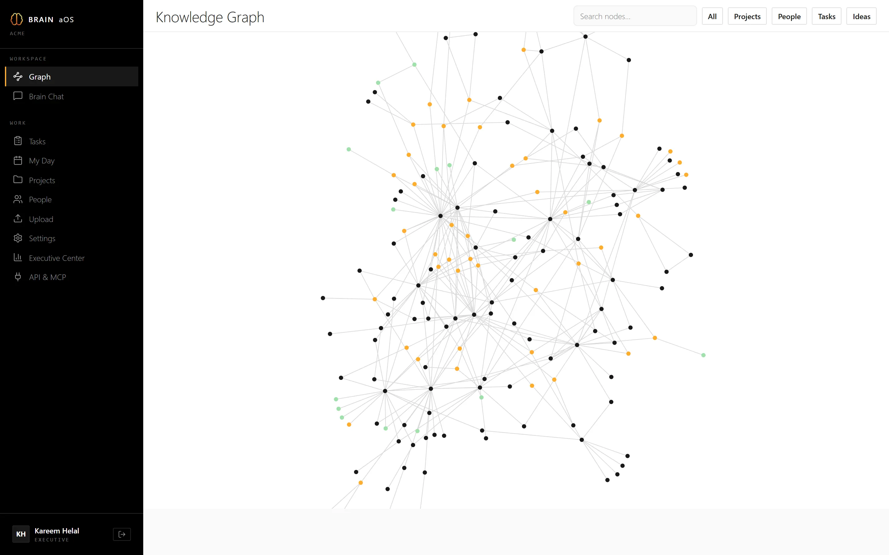
Brain aOS relinks your organization's memory — meetings, documents, decisions, people — into one living cognitive graph. You're looking at it.
Decisions dissolve into transcripts nobody rereads. Context leaves with the people who held it.
The knowledge isn't lost. It's disconnected.
Meetings, documents, email, chat, CRM. Every source is distilled the moment it arrives —
not stored as text. Understood as structure.
People to decisions. Decisions to meetings. Deals to the risks that stall them.
One graph that learns your company as it runs — and answers for it.
A live sample from a demo company's graph. Pick a question — watch the answer travel the graph behind it.
Real screens from the product, running a demo company.
Graph, chat, boards, people, ideas — everything the Brain knows, one sidebar away.

Files, folders, transcripts — entities and relationships extracted on arrival.
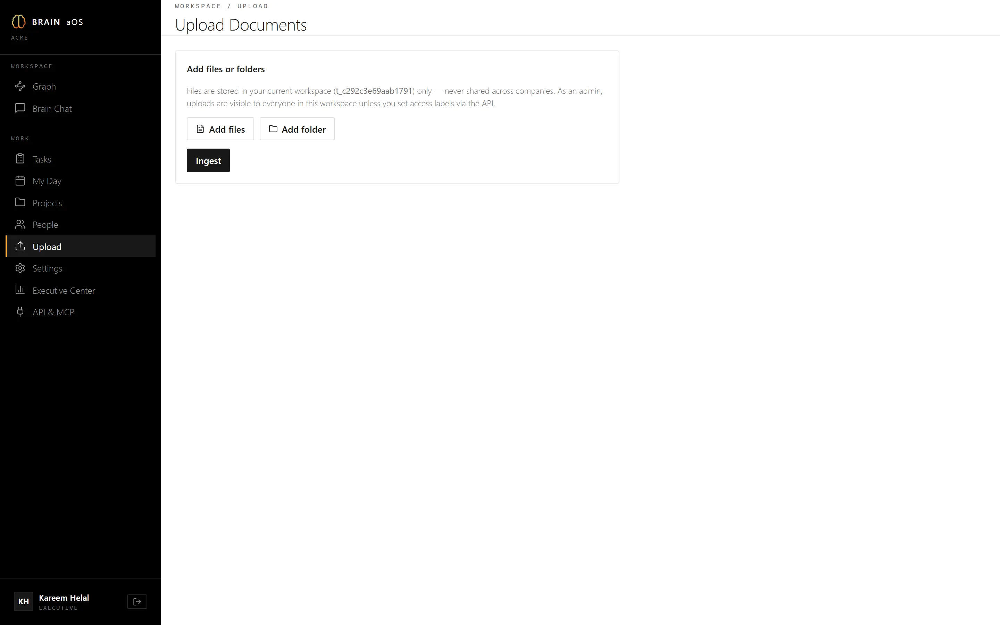
Every mode grounded in your graph, with sources attached.
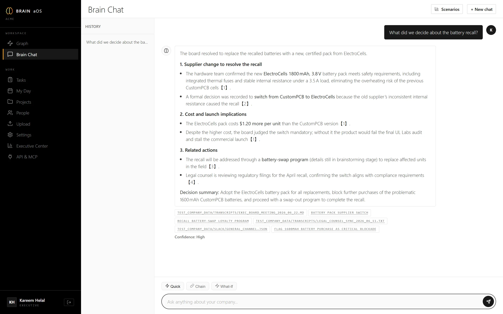
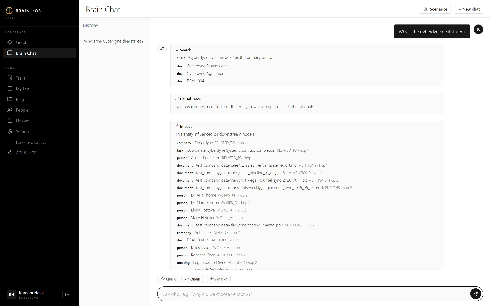
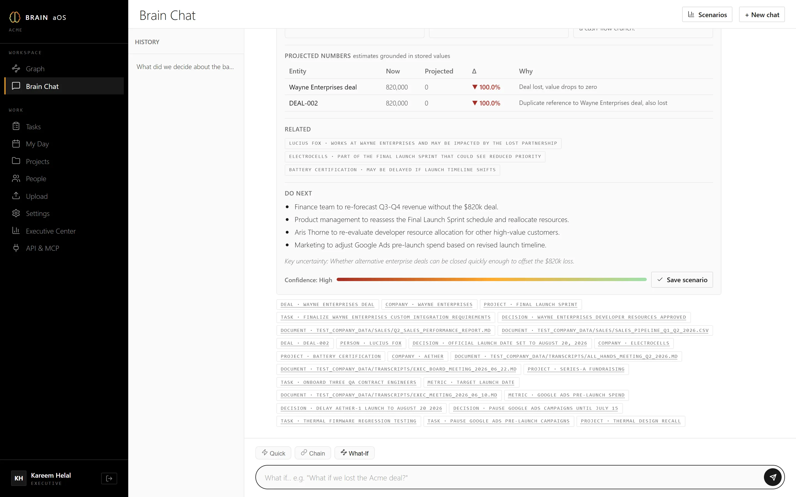
People, projects, decisions, meetings: nodes with provenance, not fragments of text.
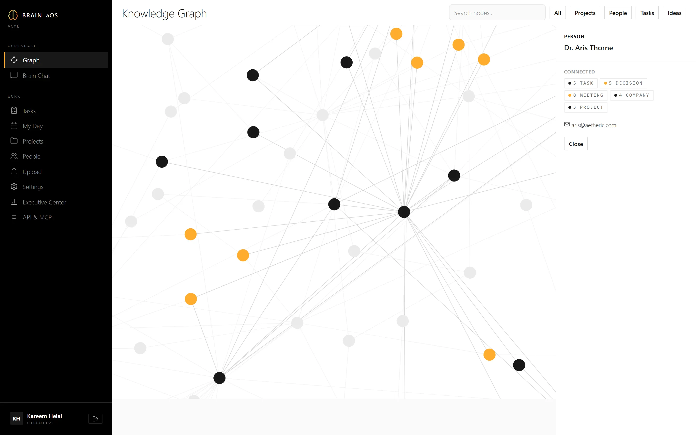
Employees and outside contacts — expertise, involvement, relationships. Never a form.
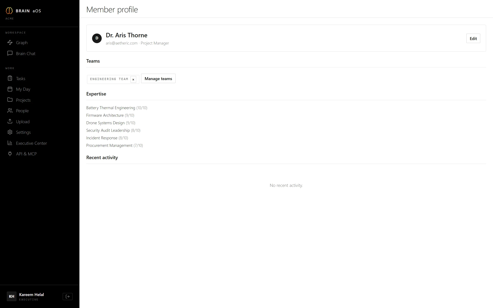
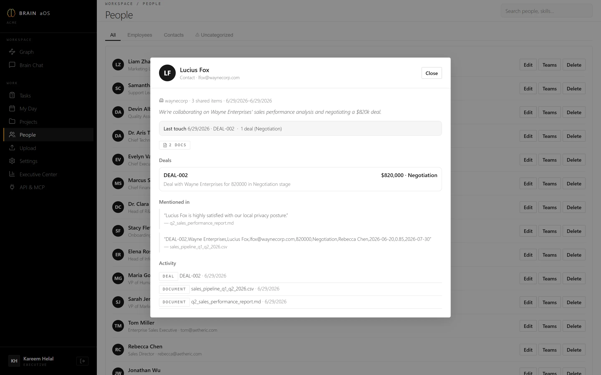
Kanbans wired into the same graph as everything else.
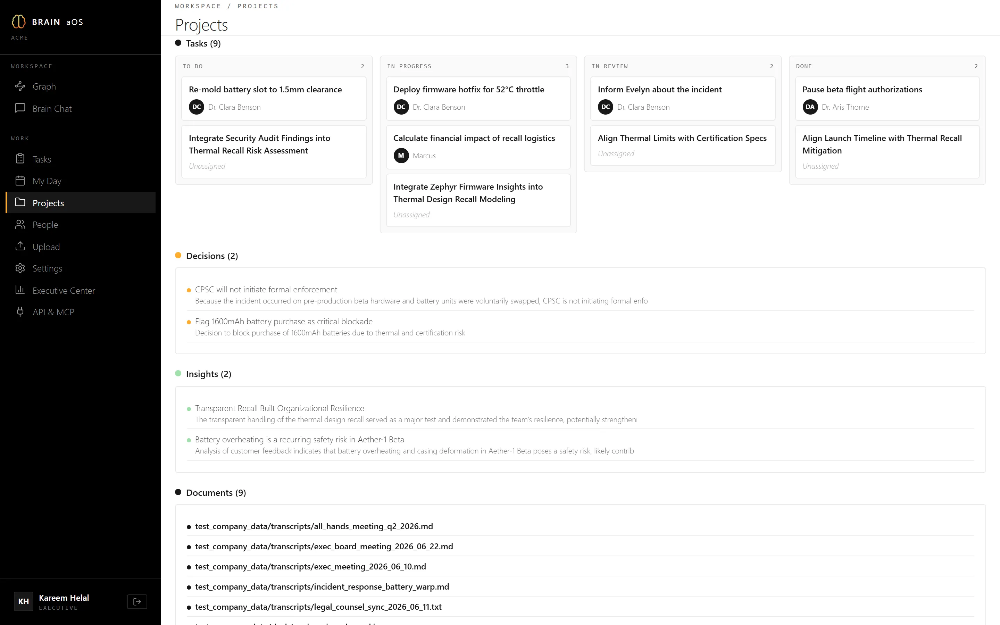
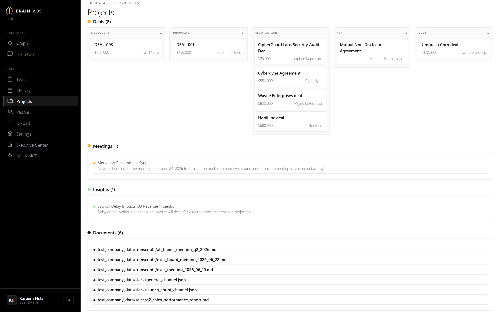
Scored against everything the Brain knows — alignment, capability, novelty — including when not to build.
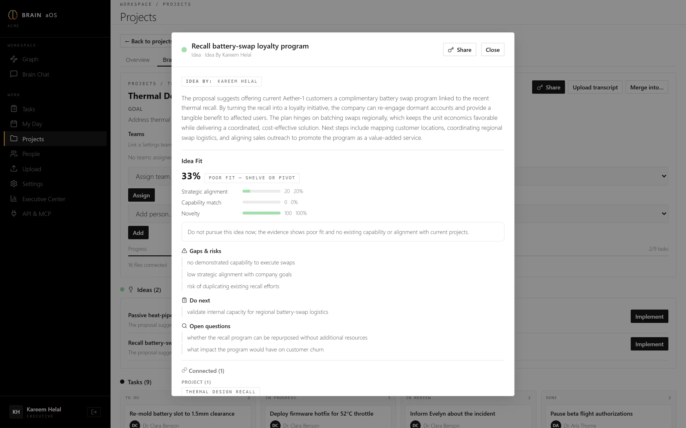
Every autonomous action is stage-gated in the Executive Center — logged, reversible, yours to sign.
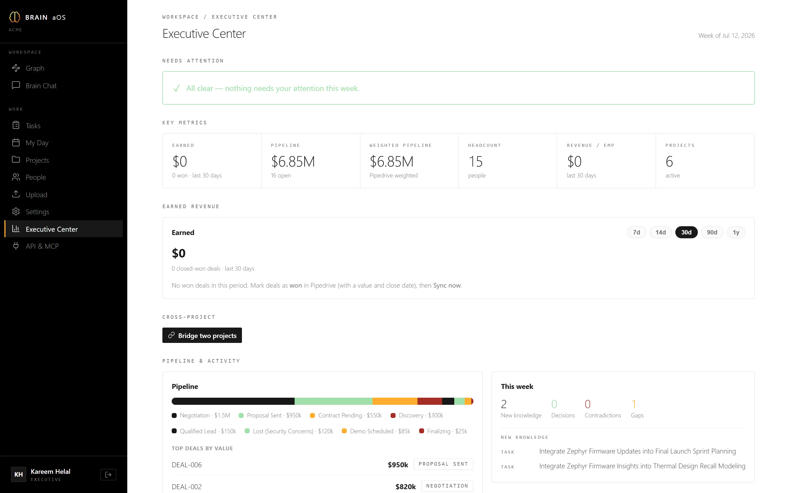
Brain aOS ships a native MCP server with identity-scoped member keys. Coding agents, assistants, and AI employees read from — and write to — the same organizational graph, under the same permissions as their owner, behind the same approval gates.
One database per organization. No shared tables, no cross-tenant queries — isolation by construction.
Vectors are computed and stored inside your tenant. Content never leaves to third-party embedding APIs.
Every autonomous action passes an explicit approval gate. Nothing executes unsupervised.
Cairo engineered.
Globally deployed.
Cohorts onboard weekly.
Book a call →